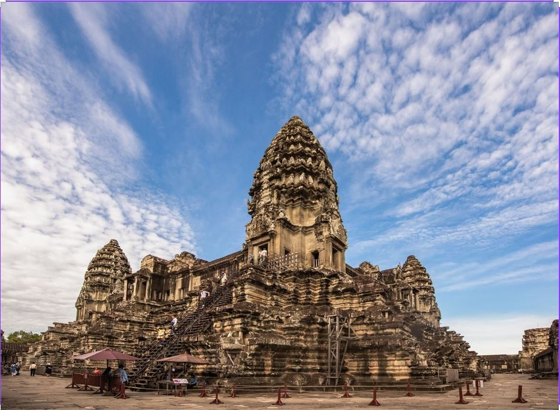

CultureCulture

Siem Reap & Angkor
La porte de l'empire khmer. Lever du soleil sur Angkor Wat, les visages du Bayon, les racines de Ta Prohm, et le grès rose de Banteay Srei à une heure de route.The gateway to the Khmer empire. Sunrise over Angkor Wat, the faces of the Bayon, the roots of Ta Prohm, and the pink sandstone of Banteay Srei an hour away.
Voir les itinérairesSee itineraries